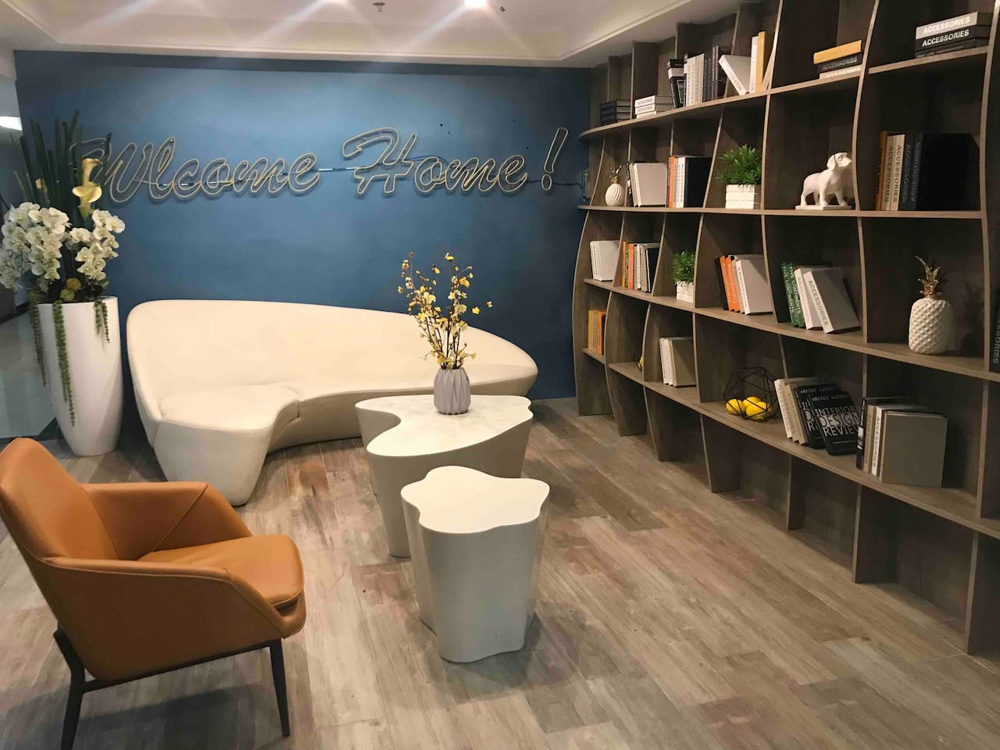

MituHome
 位于春熙路商圈,出门即是成都远洋太古里,快捷却不拥堵喧闹,能让您闲庭信步,步行至春熙路地铁站仅需2分钟,周边齐全的公交车站,方便的交通路线让您尽享成都旅游特色｡
位于春熙路商圈,出门即是成都远洋太古里,快捷却不拥堵喧闹,能让您闲庭信步,步行至春熙路地铁站仅需2分钟,周边齐全的公交车站,方便的交通路线让您尽享成都旅游特色｡
￥365.00
8折
火烈鸟双人房
 房屋紧靠太古里春熙路,步行到太古里2分钟,步行到春熙路9分种,随时享受春熙路太古里的风情､美食､购物等;小区东边紧靠成都的母亲河府河,河边可以散步喝茶感受休闲成都;步行十来分钟到达成都年轻人最喜欢的水津街和九眼桥的酒吧一条街,体验夜成都和成都的音乐及休闲文化。
房屋紧靠太古里春熙路,步行到太古里2分钟,步行到春熙路9分种,随时享受春熙路太古里的风情､美食､购物等;小区东边紧靠成都的母亲河府河,河边可以散步喝茶感受休闲成都;步行十来分钟到达成都年轻人最喜欢的水津街和九眼桥的酒吧一条街,体验夜成都和成都的音乐及休闲文化。
9折
￥277.00
性价比之王
私人影享，私人影院投影仪，可以做饭；交通便利，近地铁口，3个站到春熙路太古里。
￥208.00
5折
特色名宿
 楼下就是成都最繁华的太古里,步行几分钟可到地铁站｡这里是你探寻成都顶级餐厅与本地美食的理想起点｡顶级餐厅,高档川菜,火锅串串,网红美食店,均距离你几步之遥，和食物相关的幸福感不过几分钟的距离｡
楼下就是成都最繁华的太古里,步行几分钟可到地铁站｡这里是你探寻成都顶级餐厅与本地美食的理想起点｡顶级餐厅,高档川菜,火锅串串,网红美食店,均距离你几步之遥，和食物相关的幸福感不过几分钟的距离｡
￥169.00
7折